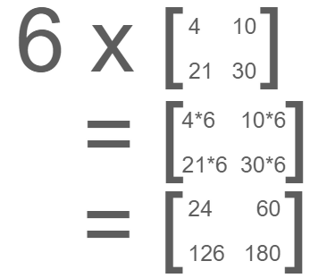
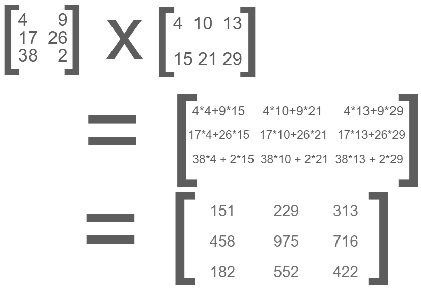

Matrices (Math)
Introduction
Matrices (Singular: Matrix) in mathematics are arrays of numbers that are arranged in rows and columns…
Each matrix has its own dimensions. Its dimensions is the amount of rows and columns it has, so a matrix with four numbers can be 2x2 (2 by 2)...
The bigger the dimensions, the more numbers are inside the matrix.
Matrices are commonly used to contain multiple numbers. Every number in a matrix is called an element. Each matrix is usually shown with a capital letter like “A” or “B”. Each element is shown as a lowercase letter like “a” or “b” with a subscript with the row and the column…
Identity Matrix
The Identity Matrix is a square matrix with 1’s on the main diagonal with 0’s everywhere else and is shown with a capital i…
The identity matrix is a very important matrix as it can be used to find the inverse of a matrix using Elementary Row Operations.
Matrix Operations
There are several things that we can do with matrices.
Addition
You can add matrices with each element adding the same element in the other matrix…
For addition and subtraction to work, the matrices would have to be the same sizes. Otherwise addition and subtraction cannot work.
Subtraction
For subtract, basically do the opposite of addition by subtracting an element by another element in the same spot…
Multiplication
Multiplication with matrices can get complicated fast, but much easier with a constant…

This is called “scalar multiplication” because the constant is called a scalar because the matrix is being multiplied by this constant.
Multiplication with Two Matrices
Multiplying with two matrices can get really complicated based on the dimensions of both of the matrices…
Notice how every number is added with the first number from both the first row of matrix A and the first column of matrix B. No number multiplies twice…
The first number we got is 680. Now that we completed the first row with the first column, now we multiply the first row with the second column and same with the second row...
And now the matrix is complete. But there is still more. We can flip the multiplication so we are multiplying matrix B with matrix A…

You can see that the product of Matrix B with Matrix A is different from the product of Matrix with Matrix B, this is because we have three rows instead of two, this makes the product have three rows instead of two.
Transposing
When we ‘transpose’ a matrix, it means we flip the rows and columns of a matrix. When a matrix is being transposed, it is denoted with a “T” in the top-right corner…
The Negative of a Matrix
You can find out the negative of a matrix by multiplying every element in the matrix by -1 or just flip the positive/negative sign of every element…
Determinant of a Matrix
2x2 Matrices
The determinant of a matrix is a special number that can be calculated through a matrix. Only matrices that are squares (same amount of rows and columns) can have a determinant be calculated. An example of a determinant of a matrix would be…
In this example, the determinant is 128. The formula for 2x2 matrices is ad - bc where ad is positive and bc is negative. The determinant is shown with two vertical lines on the ends of the matrix capital letter…
3x3 Matrices
The determinant of 3x3 matrices is different from solving the determinant of 2x2 matrices. For 3x3 matrices you first multiply a by the determinant of the 2x2 matrix that contains every element that is not in a’s column or row, do the same for b and c...
1. Cross out every number in a's row and column
2. Find the determinant of the remaining, uncrossed out numbers
3. Repeat steps 1 and 2 for b and c.
Each ‘submatrix’ of a matrix in a matrix is called a minor matrix. Here’s the example solved step by step...
The determinant of this 3x3 matrix is 1144. This method is called the Lapase Expansion and can be used to find the determinants of matrices bigger than 2x2 matrices. Keep in mind that there are other ways to find the determinant of a matrix.
The determinants of a 4x4 matrix
The determinant of a 4x4 matrix is similar to solving the determinant of a 3x3 matrix, but with a few differences…
This is the formula for solving the determinant of a 4x4 matrix and this pattern continues with bigger and bigger matrices.
The Inverse of a Matrix
Some Matrices have an inverse, these matrices are invertible matrices. The matrices that do not have an inverse are singular. Matrices that do have a non-zero determinant have an inverse. There are two ways to find the inverse of a matrix.
Finding out the Matrix through Matrix of Minors, Matrix of Cofactors, and Adjugate
Matrix of Minors
The first step to find the inverse of a matrix is to find the “Matrix of Minors”. For every element, ignore all the elements in its row or column and find the determinant of the rest of the numbers…
Now we put all of these numbers into a separate matrix…
Matrix of Cofactors
The matrix of cofactors is the next step after the Matrix of Minors, basically you multiply every alternate element by -1, or just flip the signs…
Adjugate
The adjugate is when you transpose the Matrix of cofactors like this…

1/Determinant
The last step is to divide the Adjugate by the determinant of the original matrix…
Now we divide the adjugate by -60…
The inverse of the matrix is…
This method can be used on bigger matrices but it’s best just to use a matrix calculator.
Inverse of a Matrix by Elementary Row Operations
You can also find the inverse of a Matrix by elementary row operations. Unlike the previous method, this one isn't a set of steps, but instead we try to turn the matrix that we want to see the inverse of into the identity matrix. So we put our example matrix and the identity matrix beside each other…
There are three Elementary Row Operations that we can do. We can multiply a row by a constant, we can swap rows, and we can replace one row by adding or subtracting a multiple of another…
And this is the final step since the left matrix is the identity matrix, so the inverse of the original matrix is…